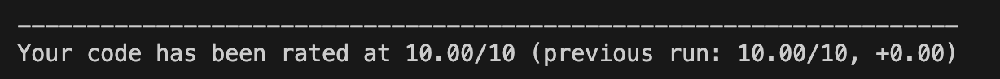
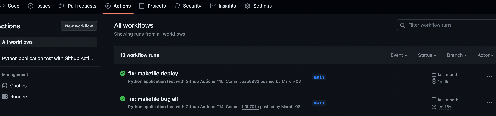

A Simple CI/CD Setup for ML Projects
Apply best practices and learn to use GitHub Actions to build robust code.
April 27, 2024 · MLOps, CI/CD
Introduction
Dealing with integrations, deployment, scalability and all those topics that make Machine Learning projects a real product is a job on its own. There is a reason why there exist different job positions ranging from data scientist to ML Engineer and MLOps. Still, even if you don’t need to be an expert on these topics, it is good to have some standard well-defined practices that can help you when you kick off a project. Certainly! In this article, I outline the best practices I’ve developed – a balance between code quality and the time invested in implementing them. I run my code on Deepnote, which is a cloud-based notebook that’s great for collaborative Data Science projects.
Start Simple – Readme
This may seem trivial but try to keep a Readme file more or less up to date. If it costs you little time, and you like it, also try to make a Readme that looks good. Include imagine headers icons or whatever. This file must be clear and understandable. Remember that in a real project, you will not only be working with other developers but also with salespeople, and project managers, and every now and then they might have to read the Readme to understand what you are working on.
You can find here a really nice readme template!
GitHub – othneildrew/Best-README-Template: An awesome README template to jumpstart your projects!github.com
Use virtual environments, your laptop will be happy
You probably know this better than I do, in order to develop a cool project we need external libraries. Often a lot of them! These libraries may have dependencies or conflicts. That is why it is a good idea to create virtual environments. A virtual environment helps you to have projects isolated from each other, to have completely different development environments. Usually, to do this in Python you use pip or conda.
pip
I personally am a fan of pip. Here is how to create and activate a virtual environment.
#create virtual env
python3 -m venv .venv#activate virtual env
source .venv/bin/activateNow you’re allowed to install all the libraries you wish!
Create a Requirements file, your colleagues will be happy
There is no point in writing code, especially in a field like Machine Learning, if you do not allow reproducibility of the code and experiments. Surely the place to start is to create a requirements.txt file
Requirements File Format – pip documentation v23.3.2pip.pypa.io
I can’t run code written by someone else if I don’t know what libraries that person has installed to run the code. For this reason, you should keep a text file named requirements.txt in which you enter the names of all the libraries. You can edit this file manually, that is, every time you install a library with pip, you also enter the name of the library in the requirements. Or you can use a useful pip command, to automatically enter all the libraries installed in your virtual environment directly into the requirements. Let’s see how to do this.
If you run the following command
pip freezeyou will see a list of all installed libraries appear in the terminal. Now just use a terminal trick to redirect the output of this command to the requirements.txt file instead of the terminal display.
pip freeze > requirements.txtIf you check your requirements now you will see that they have updated automatically!
If you want to automatically install all requirements in a new virtual environment you can run the following:
pip intall -r requirements.txtFormat your code with Black
Many of the libraries I use in this article do much more than what I describe. But as I anticipated my purpose is solely to have some sort of routine to follow when I develop.
blackpypi.org
I use Black to format code clearly and neatly. Here is the command you can use to run black:
find src -name '*.py' -exec black {} +In the command, we specified to edit all Python files (*.py) within the src directory.
Analyse your code with PyLint
PyLint is another extremely useful library that I suggest you start using.
PyLint automatically checks for errors in your code, forces the use of standards, and also checks for code smells, such as imports that have never been used. PyLint also assigns a score from 1 to 10 to the quality of your code.
pylint --disable=R,C src/*.pyYou will notice that I have modified the command, disabling two flags (R, and C). In this way, PyLint will not issue warnings or alerts for problems related to refactoring and conventions.
The output should look like this:

Run Tests, make sure your code is working
How do you know your code always works if you don’t use tests? Get in the habit of creating simple unit tests, which you can always extend when you write some function. A unit test is nothing more than another function that will pass a sequence of inputs to the function you want to test and see if the output is as expected.
You can implement unit tests in a variety of ways; a widely used library in Python is PyTest.
pytest: helps you write better programs
I usually create a src sister folder, called test, in which I collect all my unit tests.
To launch all the automatically written tests we run the following
python -m pytest -vv --cov=testI am lazy, I’ll use a Makefile
At this point, we have seen many files and many commands launch it. I would say that as a routine it is a bit heavy. I would like something simpler, I don’t have a very good memory😅
Well, then we can create a Makefile, which is a file in which we write some instructions, and this will launch the commands previously seen for us. In the Makefile I want to write instructions to install requirements, format code with black, check code smells with PyLint, and launch tests with PyTest. Here then is what our Makefile will look like:
install:
#install
pip install --upgrade pip&&
pip install -r requirements.txt
format:
#format
find src -name '*.py' -exec black {} +
lint:
#lint
pylint --disable=R,C src/*.py
test:
#test
python -m pytest -vv --cov=testIn this way every time we use this command from the terminal:
make testIt will actually be run
python -m pytest -vv --cov=testAnd the same thing applies to all the other commands of course in the same way.
Now our repo already looks much more professional!
Run Everything at every push with GitHub Actions
I hope everything is clear so far. At this point whenever we want to make changes to our code before we commit and push to GitHub we’ll run the following commands to make sure everything works as smoothly as possible: make install, make format, make lint, make test.
But developers like to automate everything. So, isn’t there a way that automatically runs this entire process on every git push? Well yes, there is, just make use of GitHub Actions!
With GitHub actions, we can set triggers, that is, specify events that will trigger commands, and the commands in our case are all in the Makefile.
To create GitHub actions, we need to create the .github/workflows folder in our working directory. Within this new directory, we create a YML file that we can for example name mlops.yml.
In this file, we can specify several things. First of all, any name we want.
After that, we specify the event (or events) that will trigger the commands, in this case [push]. Then, we deal with the steps (of which the first part I don’t even remember exactly what is, but fortunately there is Google and ChatGPT from which we can copy and paste 😅 ).
name: Python application with Github Actions
on: [push]
jobs:
build:
runs-on: ubuntu-latest
steps:
- uses: actions/checkout@v4
- uses: actions/setup-python@v4
with:
python-version: "3.10"
- name: Install dependencies
run: |
make install
- name: Lint with pyLint
run: |
make lint
- name: Test with pytest
run: |
make test
- name: Format code
run: |
make format
- name: Build container
run: |
make buildThis should be the code structure of the entire project
-.github/workflows
- mlops.yml
-.venv
-src
-test
-requirements.txt
-Makefile
-Readme.mdThat’s it!
Now you should be able to check on GitHub all the commands running at every push on the actions tab.

Final Thoughts
In this article, I have shown you some best practices that I use when developing projects in Python to ensure some quality in the code and protect my GitHub repository from not very functional commits. Each of these topics can still be delved into tremendously, however being able to at least somewhat structure your code quickly and easily I think can be a great help in improving your work!
If you are interested in this article follow me on Medium! 😁
💼 Linkedin ️| 🐦 Twitter | 💻 Website
You can find this article also on Towards Data Science